Near-Data Processing in Database Systems on Native Computational Storage under HTAP Workloads
前置知识补充
OLAP
OLAP是一种数据处理技术，专门设计用于支持复杂的分析操作，侧重对决策人员和高层管理人员的决策支持。OLAP的主要用途是分析聚合数据，生成报告，执行复杂的数据分析，确定趋势，以及支持商业智能应用。OLAP系统通常是数据仓库解决方案的中间分析层。
OLTP
OLTP则是一种事务处理，主要用于处理数据库事务。OLTP系统的主要用途是处理订单，更新库存，管理客户账户等面向事务的应用。OLTP系统旨在使事务应用程序仅写入所需的数据，以便尽快处理单个事务。
HTAP
HTAP（Hybrid Transaction / Analytical Processing，混合事务分析处理）是一种新兴的应用体系结构，它打破了事务处理和分析之间的“墙”。它在一份数据上同时支持OLTP（联机事务处理）和OLAP（联机分析处理）场景，需要创新的计算存储框架，从而实现事务的同时支持实时分析，省去费时的ETL过程。
HTAP的主要优势是能够在同一份数据上进行事务处理和分析处理，这样可以避免数据同步和转换的延迟，提高数据处理的实时性和准确性。例如，电商、金融行业的订单、付款信息需要实时同步到结算库的库存数据进行结算对账，各渠道交易数据统计，精准资损防控，这些信息实际上就需要实现快速的数据同步，传统的ETL它无法做到这么快速。
HTAP应用列子：
假设你是一家全球电商公司的业务分析师，你需要处理大量的在线事务（例如订单处理、库存更新、客户服务等），同时还需要进行实时的业务分析（例如销售趋势、库存状态、客户行为等）。
在传统的架构中，你可能需要维护两个独立的系统：一个OLTP系统用于处理在线事务，另一个OLAP系统用于进行业务分析。这两个系统通常需要通过ETL（Extract, Transform, Load）过程进行数据同步，这不仅增加了系统的复杂性，也可能导致数据延迟和不一致12。
然而，如果你使用HTAP系统，你可以在同一份数据上同时进行在线事务处理和实时业务分析。例如，当一个新订单被创建时，它会立即被HTAP系统处理，并且这个新订单的信息会立即可用于业务分析。这样，你可以实时地看到新订单对销售趋势、库存状态等的影响。
此外，HTAP系统还可以帮助你简化技术栈，因为你不再需要维护两个独立的系统和进行ETL过程。这可以降低运维的复杂性和成本。
名词解释 – ETL，全称为Extract-Transform-Load，是一种数据处理过程，主要用于从多个数据源抽取数据，然后对这些数据进行转换和清洗，以满足特定的业务需求，最后将清洗后的数据加载到目标系统（如数据仓库）中。
以下是ETL的三个主要步骤：
- 提取（Extract）：从多个源系统中抽取所需的数据。这些源系统可以包括各种类型的数据库、文件系统、应用程序等。
- 转换（Transform）：将提取出的数据进行清洗和转换，以满足目标系统的数据要求。这可能包括数据清洗、去重、格式转换、计算新的数据项等操作。
- 加载（Load）：将转换后的数据加载到目标系统中。这通常涉及将数据插入到数据库表中，或者将数据写入到文件系统中。
COSMOS+
COSMOS+是一个开源硬件和软件平台，它是OpenSSD项目的一部分1。COSMOS+ OpenSSD平台包括以下组件：
HYU Tiger4 SSD控制器，由XC7Z045-FFG900-3 Zynq-7000 FPGA实现
双核1GHz ARM Cortex-A9核心
每个核心的Neon DSP协处理器
350K LCs
1GByte DDR3 SDRAM内存
双QSPI闪存
1个SD卡插槽
主机接口：双PCIe Gen2 x8端点（有线PCIe接口）
支持NVMe命令集的子集
连接性：1个千兆以太网接口，1个USB 2.0（可配置为主机或设备），控制台调试接口，1个USB-UART端口，1个ARM JTAG，1个PL JTAG，1个Digilent USB-JTAG1
Alveo U280
Alveo U280是一款数据中心加速器卡，由AMD公司生产。
架构：Alveo U280基于AMD 16nm UltraScale+™架构12。
内存：Alveo U280配备了8GB的HBM2和32GB的DDR4内存12。
带宽：Alveo U280能够以460 GB/s的带宽提供8GB的HBM212。
适用领域：Alveo U280适用于数据库、分析和机器学习推断等内存有限的计算密集型应用12。
接口：Alveo U280支持PCI Express 4.0，可为高带宽主机处理器利用最新的服务器互连基础设施12。
适应性：Alveo加速器卡能适应不断变化的加速要求和算法标准，能在不改变硬件的情况下，加速任何工作负载，并能降低总体拥有成本
文章内容解析
INTRODUCTION
data-to-code架构和code-to-data
“Data-to-code”是一种数据处理模型，通常在传统的非HANA数据库中使用。当应用需要处理存储在数据库中的数据时，通常会将数据从数据库中取出，传输到应用服务器，然后在应用服务器上进行计算。这种模型的问题是，随着数据量的增长，数据从数据库到应用服务器的传输成为了一个瓶颈。
相反，在”code-to-data”模型中，我们将这些应用处理逻辑，编写为一个数据库查询或存储过程 (Store Procedure)，并将其发送到数据库服务器执行。数据库服务器将处理数据，并将结果返回给应用。这样，在应用服务器和数据库之间，只需要传输最终的结果，而不是原始的数据。这将显著减少数据传输的时间和网络带宽的使用。
总的来说，”data-to-code”和”code-to-data”是两种不同的数据处理模型，它们分别代表了数据处理的两种不同方法：一种是将数据带到代码（即应用服务器）进行处理，另一种是将代码带到数据（即数据库服务器）进行处理。
ActiveDisks
Active Disks是一种计算模型，它将计算任务从主机服务器移动到存储设备，如硬盘驱动器。在Active Disks模型中，硬盘驱动器不仅仅是存储数据的设备，而且还能执行一些计算任务。这种模型的优点是可以减少数据在网络中的传输，从而提高数据处理的效率。
例如，假设你有一个大型数据库，并且你想要对数据库中的数据进行一些复杂的分析。在传统的模型中，你需要将数据从硬盘驱动器传输到主机服务器，然后在主机服务器上进行计算。但是，如果你使用Active Disks模型，你可以直接在硬盘驱动器上进行一些计算，比如过滤和聚合，然后只将结果传输到主机服务器。这样，你可以减少网络传输的数据量，从而提高数据处理的效率。
Database Machines
“Database Machines”是一种专门设计用于处理数据库操作的硬件和软件系统。这些系统通常包括一组专门的硬件设备（如服务器、存储设备等）和一套数据库管理系统（DBMS），它们共同工作，以提供高效、可靠的数据库服务。
例如，Oracle的Exadata Database Machine就是一种典型的Database Machine。它包括高性能的数据库服务器、智能存储服务器和内部网络设备，这些设备都经过精心设计和优化，以提供最佳的Oracle数据库性能。Exadata Database Machine还包括一些先进的技术，如PCIe闪存、RDMA内存和RoCE内部网络，这些技术可以进一步提高数据库的性能和可用性。
图的部分解读
- 数据新鲜度 – 在HTAP环境中，数据新鲜度通常指的是数据的实时性，即数据从产生到可用于分析的时间间隔。在传统的OLTP（联机事务处理）和OLAP（联机分析处理）系统中，数据通常需要经过ETL（提取、转换、加载）过程才能用于分析，这个过程可能需要数小时甚至数天，因此数据的新鲜度较低。而在HTAP系统中，由于事务处理和分析处理在同一系统中进行，数据可以在产生后立即用于分析，因此数据的新鲜度较高。
- 性能隔离 – 在HTAP环境中，性能隔离通常指的是在同一系统中运行的事务处理和分析处理之间的资源隔离。由于事务处理和分析处理对资源（如CPU、内存、I/O等）的使用方式不同，如果不进行性能隔离，两者可能会相互干扰，影响系统的性能。通过性能隔离，可以确保事务处理和分析处理各自有足够的资源，从而保证系统的稳定运行。
- Data Transfer Reduction – 由于HTAP环境需要在同一份数据上同时支持OLTP（联机事务处理）和OLAP（联机分析处理）场景，因此数据需要在计算节点和存储节点之间频繁地进行读写。这会消耗大量的网络带宽，并成为系统性能的瓶颈。
为了解决这个问题，HTAP系统通常会采取一些策略来减少数据的传输量，这些策略可能包括数据压缩、数据去重、查询优化等。
HTAP架构分类
- 统一存储 – 基于快照与MVCC在同一数据集上执行OLTP和OLAP技术
快照技术的实现原理是，当进行快照时，系统会对原数据库的所有数据页做个标识，如果数据页在创建快照后被修改，会复制一个数据页出来，没有修改的数据页则不会有快照。
MVCC的主要思想是保存数据的历史版本，通过对数据行的多个版本管理来实现数据库的并发控制。这样我们就可以通过比较版本号决定数据是否显示出来，读取数据的时候不需要加锁也可以保证事务的隔离效果。
- 解耦存储 – 将OLAP与OLTP子系统分开，数据交换是通过网络进行的，计算节点和存储节点之间通过网络进行数据的读写。
- NDP存储 – NDP允许就地操作来处理冷数据，而无需将其移动到主机上。NDP自动化执行，在异步加载 NDP 操作并将其委托给计算存储执行后，数据库管理系统继续运行。
文章提出的问题
HTAP 架构会导致冷数据的传输（OLAP的调用）
问题解决方案 – NDP 天然地适用于 HTAP 问题空间（详见NDP存储部分内容）
NDP 要求事务一致性
问题描述 – NDP 目前主要在只读环境中使用。在更新密集型 HTAP 环境中OLTP (联机事务处理) 类型事务的最新修改只能在大型 DBMS (数据库管理系统) 的内存中获取（OLTP高并发，内存比硬盘快太多）。此外，从 OLAP (联机分析处理) 事务加载到计算存储的分析型 NDP 操作需要最新数据和冷持久数据集，以实现一致性和新鲜度保证。这是因为 NDP 操作是在调用事务的上下文中执行的，因此需要最新和一致的数据。
然而，如何收集最新数据并将其传播到智能存储，以及如何确保一致性和新鲜度？
Update-aware NDP 做了什么？
- Update-aware架构 – 利用小型共享状态在计算存储上创建一致的快照，并针对快照就地执行分析 NDP 操作
- NDP执行模型 – NDP 存储能以无干预的方式异步执行操作。只读、分析型 NDP 操作 - 案例介绍了如何就地处理中间结果和最终结果，以减少数据传输，案例在两个不同系统中的实现：键值存储（nKV）和多版本 DBMS（neoDBMS）
- 核心思想解读 – 共享状态是大型数据库管理系统内存中包含最新更新的工作集与计算存储中更大但更冷且更完整的数据集之间的唯一差值。这意味着共享状态是一个小型的、包含了所有最新更新的数据集，而计算存储则包含了更大规模但更新不那么频繁的数据集。
每当共享状态达到预先设定的限制时，共享状态就会定期刷新到计算存储中。这样，计算存储就能够获得完整一致的快照，只读 NDP 操作可以在保证一致性的情况下执行。此外，由于计算存储现在拥有整个数据集的完整快照，因此原位执行是异步的，无需数据库管理系统/主机干预。
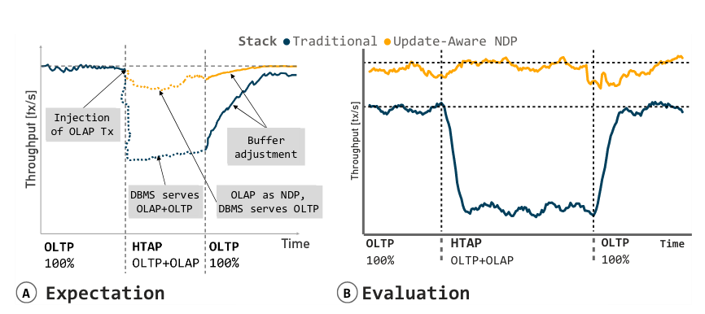
图的部分解读
- “Throughput [tx/s]” 是一个性能指标，用于衡量系统在单位时间内处理事务的数量。“tx/s” 是 “transactions per second” 的缩写，意为每秒事务数
- Buffer adjustment” 通常用于描述在处理数据流时对缓冲区大小或内容的调整
实验解读
实验系统配置
- 传统 – 使用 MyRocks 存储引擎的 MySQL 数据库系统，MyRocks 是 Facebook 基于 Google 开源的 LevelDB 实现的 RocksDB 移植到 MySQL 上的结果。
- 新型 – nKV 是一种基于 RocksDB 的键值 (KV) 存储系统。RocksDB 是一个由 Facebook 开发的开源键值存储库，它提供了高性能的数据持久化。
nKV 可以通过 MyRocks（MyRocks over nKV）作为 MySQL 存储引擎公开nKV 是一个单版本的系统，这意味着每个键只有一个关联的值，而不是多个版本的值。它使用写入即复制 (Write-Ahead Logging, WAL) 的策略，这是一种在修改数据之前先将修改操作记录到日志中的策略，可以提高数据的可靠性和完整性
HTAP 工作负荷与系统
- 数据新鲜度 – 对于 HTAP 工作负载的分析部分，给定的系统架构应力求拥有 OLTP 工作负载更新后的最新数据版本。因此，需要将这些更新快速传播到分析快照，并以最佳方式避免交易工作负载的性能下降
- 数据一致性 – 无论数据是否新鲜，整个系统都必须确保其事务的事务性保证，以便事务性查询和分析性查询对数据有一致的看法。目前已经提出了各种机制，并在数据库中应用多版本并发控制来构建所谓的所需快照。其中最著名的两种方法是 “写时拷贝”（CoW）方法和 “多版本并发控制”（MVCC）方法。第一种方法通过为修改创建副本来确保旧版本的可见性。第二种方法是为每条修改过的记录创建一个新版本，并用当前时间戳对其进行扩展。
- 数据传输 – 与分析引擎和事务引擎的分离无关，从存储层到主机处理单元的数据传输占整体性能的很大一部分。其原因是：(a) HTAP 同样处理冷数据和热数据；(b) 冷数据比热数据大得多，因此造成更多的污染和更高的驱逐率。总之，结果是可扩展性受限、带宽受限和性能损失。
- 性能隔离 – DBMS 通常用于关键业务应用，其在延迟和吞吐量方面的强大性能至关重要。必须防止 OLTP 和 OLAP 工作负载之间的干扰，特别是在两者同时运行的混合方案中
- 内存污染 – OLTP 工作负载在最先进的大型主存储器中的热数据（工作集）上运行，而 OLAP 处理的主要部分是超出存储器容量的冷数据。因此，在混合场景中进行 OLAP 扫描时，如果事务处理引擎和分析引擎共享相同的内存，如数据库内存或操作系统页面缓存和设备缓存，则不可避免地会造成内存污染。尽管 buer 的大小通常被定义为大于数据集的热数据部分，但分析查询必须将大部分冷数据取到 buer 中，从而导致热数据被驱逐。
Near-Data Processing
- 存储技术硬件特性 – 由于闪存、NVM 和 HBM 具有极高的并行接口，因此在 NDP 方法中得到了广泛应用。因此，与与主机的通信相比，可以实现更高的设备带宽。数据库扫描和连接的存储内处理一文中提出的设备内部带宽为 50 GB/秒，而设备与主机之间的带宽为 6.4 GB/秒。这是由于半导体存储设备的物理组织结构造成的，它涉及多个芯片，通过独立通道连接到设备上的处理元件。芯片级带宽随着芯片密度的增加而增加，而芯片密度的增加又得益于现代三维堆叠技术。同样，由于避免了通过多个操作系统层进行耗时的传输，并可高度定制并行存储实体的仲裁，减少了等待队列的负荷，从而降低了延迟。通常情况下，通常不会暴露给主机的底层接口（如多平面操作）可以进一步优化。
- NVM (Non-Volatile Memory) – 非易失性内存，是一种计算机存储器，其特点是在断电后所存储的数据不会消失。NVM 包括各种类型的内存设备，如闪存、EEPROM (电可擦除可编程只读存储器)、ROM (只读存储器) 等。NVM 的一个重要应用是 SSD (固态硬盘)，其中数据存储在闪存中
- HBM (High Bandwidth Memory) – 高带宽存储器，是一种新型的 CPU/GPU 内存芯片456。HBM 是三星电子、SK海力士、AMD 共同提出的基于 3D 堆栈工艺的高性能 DRAM，适用于高存储器带宽需求的应用场合，像是图形处理器、网络交换及转发设备（如路由器、交换器）等4。HBM 的优势在于其高吞吐高带宽。
- 计算模型和计算布局 – 除存储技术外，如今的设备可能还包括各种异构处理元件，如 CPU、GPU 或 FPGA。单个计算可以传统地放在主机上，也可以放在设备上。如果是后者，还可以在异构硬件的不同处理元件之间拆分和分配处理。将计算从 ARM 内核转移到并行 FPGA 流水线可以进一步提高吞吐量，尤其是在大扫描时。根据实际操作、工作负载和底层存储技术等方面的情况，计算位置的决定可能会有所不同，可以为每次 NDP 调用单独配置硬件。本质上是在存储层实现数据库操作的弹性和下推，将计算节点的 CPU 资源与存储节点的 CPU 资源分离。本研究的目标是 NDP，它是以现场处理为目标的问题空间的一个独特子集。
Native Storage
本地存储在异构计算体系下通常将数据库功能下推到闪存中，此时影响数据存储引擎吞吐量的的指标为并行I/O单元的利用效率。
- Channels：在计算机硬件中，通道 (Channel) 是一种传输数据的路径。在 NAND Flash 中，channel 表示有几组 ALE、CLE、IO [7:0]、DQS、RE、WE、WP 信号线
- LUNs：LUN (Logical Unit Number) 是逻辑单元号的缩写，它是在存储区域网络 (SAN) 或其他数据存储技术中用来标识设备或分区的一种方法23。在 NAND 中，LUN (Logical Unit) 和 die 是同一个意思，都是执行 cmd 和 report status 的最小单位
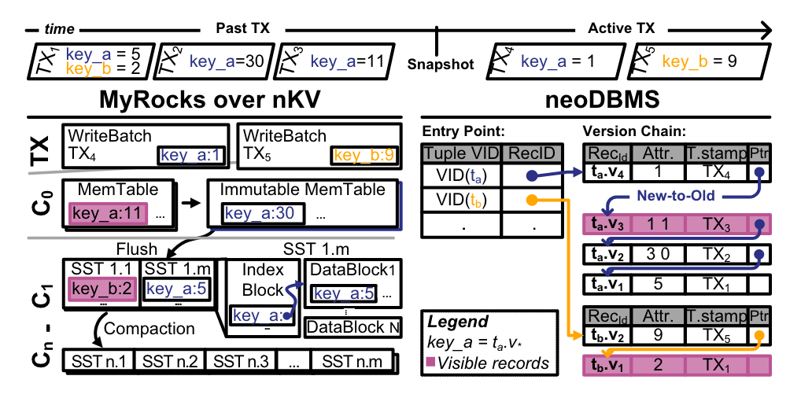
实验使用的两种系统介绍
图中内容一些名词解释
MyRocks over nKV
- skiplist-based MemTable –是RocksDB中的一种内存数据结构，用于暂存数据，直到数据被刷新到SST文件中1。它为读写操作、随机访问和顺序扫描提供了良好的性能1。此外，它还提供了一些其他MemTable实现当前不支持的有用特性，如并发插入和带提示的插入。
Skiplist是一种概率性的数据结构，支持SortedMap的所有功能，性能和红黑树相当。Skiplist每一个节点有一个随机产生的层数，从1层到N层。其实跳表就是在普通单向链表的基础上增加了一些索引，而且这些索引是分层的，从而可以快速地查的到数据。
以下是一个典型的跳表的示意图：
level 3: 1 -----------------------------> 9
level 2: 1 --------> 4 ----------------> 9
level 1: 1 --> 2 --> 4 --> 6 ----------> 9
level 0: 1 --> 2 --> 3 --> 4 --> 5 --> 6 --> 7 --> 8 --> 9 --> 10
在这个示意图中，数字1-10代表节点的键值，箭头表示节点之间的链接，level表示索引的层级。高层级的索引覆盖了更大范围的节点，这使得查找效率得到了显著提高。
- Sorted String Tables(SSTs) –Sorted String Tables (SSTs) 是一种持久化的文件格式，被 ScyllaDB, Apache Cassandra, 和其他 NoSQL 数据库用于将存储在内存中的数据（memtables）进行排序以便快速访问，并将其存储在磁盘上的一组持久、有序、不可变的文件集中123。”不可变”意味着一旦 SSTables 被创建，就永远不会被修改1。
每个 SSTable 包含一系列的块（blocks），通常每个块的大小为 64KB，但这是可以配置的2。对于每个 SSTable，数据库会创建一个索引文件和一个数据文件1。索引文件帮助在排序的数据文件中更快地定位数据1。
SSTable 使用了一种名为 Log-Structured Merge (LSM) 的树形数据结构格式1。这种格式对于写入密集型、快速增长的、极大的数据集比传统的 B-tree 格式更有效率1。
以下是一个典型的 SSTable 的示意图：
+-------------------+
| Block 1 |
+-------------------+
| Block 2 |
+-------------------+
| ... |
+-------------------+
| Block N |
+-------------------+
| Metaindex Block |
+-------------------+
| Index Block |
+-------------------+
在这个示意图中，每个块（Block）包含了一系列的键值对。Metaindex Block 存储了元数据信息，如过滤器（例如布隆过滤器）的信息。Index Block 是用于定位块的索引，它在 SSTable 被打开时加载到内存
- write batch – 在RocksDB和MyRocks中，Write Batch是一种用于存储一组写入操作的数据结构。这些写入操作可以是插入（Put）、删除（Delete）或者更新（Update）。当一个事务被提交时，它的所有修改都会首先被写入到Write Batch中。
然后，这个Write Batch会被写入到RocksDB位于内存中的MemTable中。MemTable本质上是一个SkipList，里面缓存的记录是有序的。和InnoDB一样，事务更改的数据（Write Batch）在提交前也会先写入Write Ahead Log（WAL），事务提交后，只需保证WAL已经持久化即可，MemTable中数据不需要写入磁盘上的数据文件中。
当MemTable大小达到阈值后（比如32MB），RocksDB会产生新的MemTable，原来的MemTable会变为只读状态（Immutable），不再接收新的写入操作。Immutable MemTable会被后台的Flush线程dump成一个sst文件。
总的来说，Write Batch是一种用于暂存一组写入操作的数据结构，它在事务提交时被写入到MemTable中，从而提高了数据库操作的效率。
以下是一个典型的 Write Batch 和 MemTable 的示意图：
+-------------------+
| Write Batch |
+-------------------+
| Put(key, value) |
| Delete(key) |
| Update(key) |
+-------------------+
|
| Write to MemTable
V
+-------------------+
| MemTable |
+-------------------+
| key1 -> value1 |
| key2 -> value2 |
| ... |
+-------------------+
在这个示意图中，Write Batch 包含了一系列的写入操作，包括插入（Put）、删除（Delete）和更新（Update）。当事务提交时，这些操作会被写入到 MemTable 中。
neoDBMS
neoDBMS – a multi-version NDPDBMS based on PostgreSQL.
RecordID – <PageNr,SlotNr> 实体化版本记录唯一隐式标识符
new to old – 可以理解为一种数据处理方式，新数据会优先于旧数据被处理
VID – 所有版本记录在同一条链中时使用同一个Virtual id
图中标红的两条记录为快照开始的时间戳对应的记录。
UPDATE-AWARE NDP ARCHITECTURE
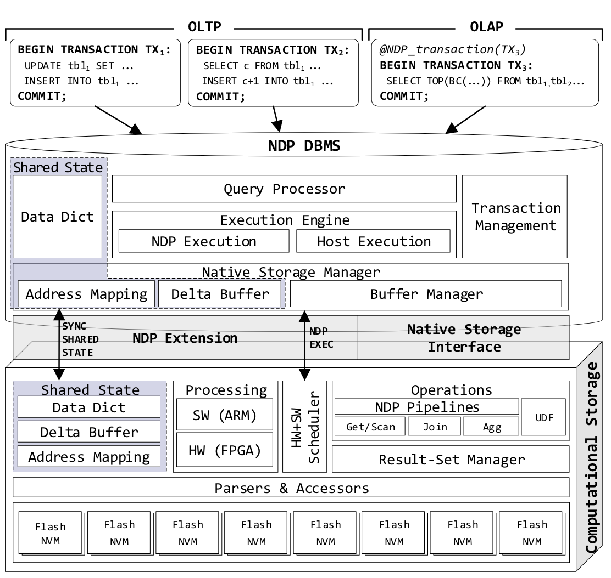
- UPDATA-AWARE核心解决的问题为 – 在频繁更新事务的情况下确保事务保证的同时，为需要读取设备上大量冷数据的只读 HTAP 操作（例如带有大量扫描的复杂查询）的处理提供方便。
- 通过定义小型共享状态来保证只读操作的一致性，共享状态会作为每次 NDP 调用的一部分进行传播。因此，在传播时，计算存储会获得完整且事务一致的原位快照，只读 NDP 操作可以在保证一致性的情况下执行。唯一需要注意的是，NDP 处理必须从共享状态开始，然后才转到冷数据，因为冷数据中的数据项可能已被前者中的 “更新版本 “作废。
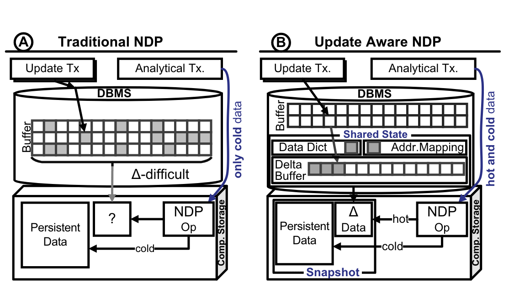
- A – 传统NDP架构不能处理热数据的原因，如果缓冲池中的数据相较于SSD中的数据更新，那么在SSD上执行查询处理可能会得到过时的数据，无法将查询处理下推到SSD中。
- B – shared State大小几百KB至几MB间，以增量方式累积对最新数据、映射表、状态或系统信息修改，并将它们放在Shadow Data Structures中（Shadow Data Structures是一种数据结构，它们在某些情况下用于优化数据处理。例如，Shadow Array是一种实现动态可调整大小的抽象数据类型（如List、Queue或Stack）的方法），统称为共享状态。
- B – Delta Buffer,在多版本的数据库管理系统（DBMS）中，Delta-Buffer会积累由活动事务新创建的版本，而前任版本则保留在内存中，可以被并发事务访问。在单版本的数据库管理系统（如RocksDB）中，Delta-Buffer包含替换记录。
B – 关于Delta-Buffer相关资料
在SAP HANA中，”Delta-Buffer”指的是其Delta Merge操作的一部分。在SAP HANA中，所有的写操作都首先写入Delta存储，然后通过Delta Merge操作将数据转移到主存储。这个过程涉及到两个Delta存储（Delta 1和Delta 2）和两个主存储（Main 1和Main 2），以确保在合并操作期间，读写操作都可以正常进行。
在Multi-version DBMS中，”Delta-Buffer”指的是用于存储不同版本数据的缓冲区。在多版本并发控制（MVCC）中，每个数据项可能存在多个版本，每个事务都针对包含所有当前可见元组版本的数据库快照进行操作。
在RocksDB中，”Delta-Buffer”指的是其写缓冲区。RocksDB允许在内存中同时保持多个写缓冲区，以控制内存使用。此外，RocksDB还支持二级缓存，该缓存可以在非易失性介质（如本地闪存设备或NVM/SCM）上实现块缓存。
共享状态传播模式
常规模式 – Flush&Append
由共享状态的刷新触发
- 刷新的状态被预先准备好，包含已提交事务的数据，相应的日志记录也被提前写出。
- 基于DBMS控制的地址映射，在刷新之前，由本地存储管理器分配非相邻物理页面。
- 所有共享状态页面被刷新到存储并写入到这些分配的位置。因此，刷新到持久存储被实现为逻辑追加，放置在预先分配的非相邻位置。（可以对页面进行轻量级的压缩）
- 当所有页面成功写入时，存储管理器才会原子地交换地址映射条目。否则，所有预先分配的地址映射都会被取消，相应的位置将被标记随后进行垃圾收集，并且过程重复。
注意！！！ — 地址映射也被原子地合并，合并只在活动的NDP操作完成后进行。
Pass Along & Cache
- 当NDP被调用时，共享状态被快照并传播到存储设备，同时也传播了当前正在进行的事务列表。这部分状态只是在调用期间被设备缓存，并在调用完成后被释放或垃圾收集。
- 最大的共享状态大小配置为小于NDP设备的内存限制，确保设备有足够的内存来缓存共享状态。
- 将共享状态应用到持久存储通常是困难的，因为它可能包含调用事务的修改，但是我们不知道这个事务是否会提交。此外，由于其空间利用率可能较低，因此可能会对连续的空间管理操作（如压缩和垃圾收集）产生开销。
- NDP操作可以以无共享的方式执行，无需与主机进行任何干预或同步。DBMS和设备可以独立操作，并且只在最后同步。
NDP Transaction Management
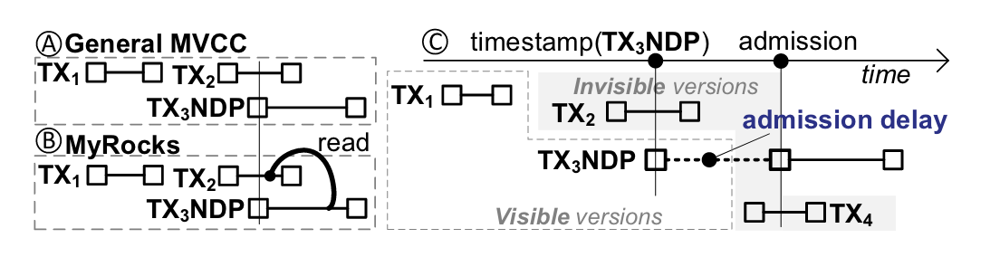
事务一致性 – 规定来自 NDP 事务的 NDP 操作必须只处理在其开始之前提交的事务的修改
问题 – 在调用 NDP 时，并发事务是提交还是中止都是未知的，因此哪些记录应该被处理也是未知的。在MySQL/MyRocks中，规定可见的记录是在NDP调用（创建快照）之前最后提交的，而不是NDP事务开始时的。因此，来自TX2的修改可能对TX3NDP有关，但不会出现在设备上。
解决方案 – 事务准入机制，每当这样的NDP事务到达（例如，TX3NDP），它会像往常一样被分配一个事务时间戳。然而，它的准入被延迟，直到所有在它到达时正在进行的事务完成后。TX3NDP至少有快照隔离保证。
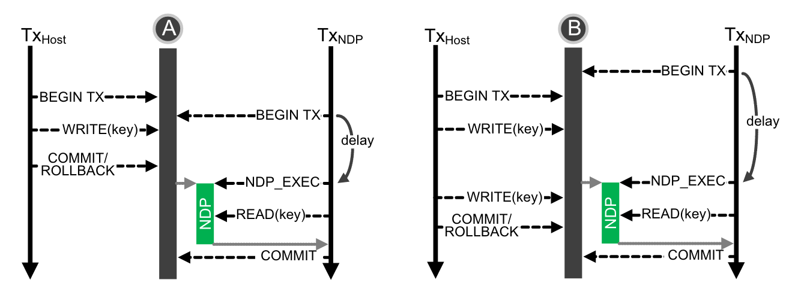
确保共享状态和 delta-buffer 只包含所有先前启动的事务的事务一致性数据.
NDP_EXEC – 调用NDP进行共享状态传播
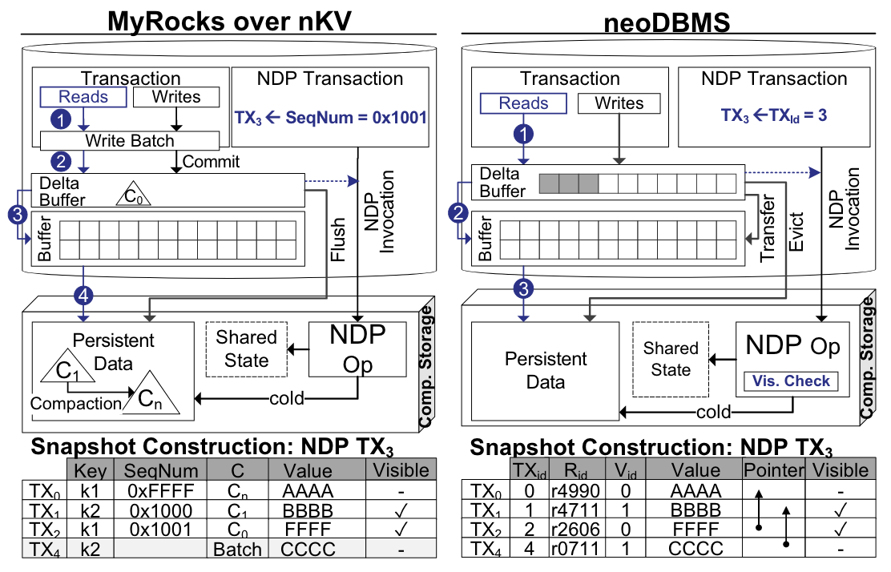
In-situ Snapshot Construction实现
Copy-on-Write 机制
在基于 Copy-on-Write 的系统（如 nKV）中，快照通常通过快照标识符（例如，序列号）来识别。在处理过程中，只需跳过具有较新标识符的记录。这是可能的，因为写入批处理机制确保 delta-buffer 只提交数据。例如，在 nKV 下，NDP 事务和调用获得序列号 0x1001，而就地快照包括键 k1 和 k2，因为序列号为 0xFFFF 的 k1 由于其组件级别较低而被跳过
多版本 DBMS 中的可见性检查
在像 neoDBMS 这样的多版本系统中，会执行就地可见性检查。为此，共享状态还包括版本链信息和 NDP 调用时的在途事务列表。给定调用事务 id，可见性检查现在可以从 VID_map 入口点开始向后遍历版本链，以找到对 NDP 事务可见的版本。我们利用最新到最旧的顺序，从而可以确保对新数据进行快速的可见性检查。
此处内容看不太懂可以对照前面的本地存储系统看一看就明白了。。。
NDP Interface
为实现 NDP 命令的高效下推，扩展了本地存储的精简接口定义，原生 NVMe 利用 SPDK 。
Native storage允许通过读/写/擦除命令直接在物理内存上操作，而无需任何中间层。通过 NVMe 有效载荷向设备传输当前共享状态的命令扩展了该接口。此外，NDP_EXEC 命令扩展可向设备发送参数集，并可触发各种可执行功能NDP_EXEC 命令扩展可向设备发送参数集，并可触发各种可执行功能。其参数集包括 (1) 共享状态，以及 (2) 操作特定参数。此外，还包括元数据和模式信息，即“Column Families”及其各自的数据格式、LSM 层数、每层 SST 分配等。
Column Families：在一些NoSQL数据库中，如HBase，”Column Families”是一种数据组织方式，每个”Column Family”包含了一组相关的列。”Column Families”可以被指定给某个 locality group，决定了该列族数据的物理位置，从而可以让同一主键的各个列族分别存放在最优的物理节点上。由于 column family 内的数据通常具有相似性，对它做压缩要比对整个表压缩效果更好。
NDP 接口与 DBMS 深度集成。对整个堆栈进行了优化，以避免内存拷贝（零拷贝方法）。对计算存储的调用可通过中央轮询管理器同步发出，或通过回调函数异步发出。逻辑地址到物理地址的映射由存储管理器维护，并在每次 I/O 时即时更新。无效页面（如压缩后）会被标记，以便日后进行垃圾回收
Parsers and Accessors
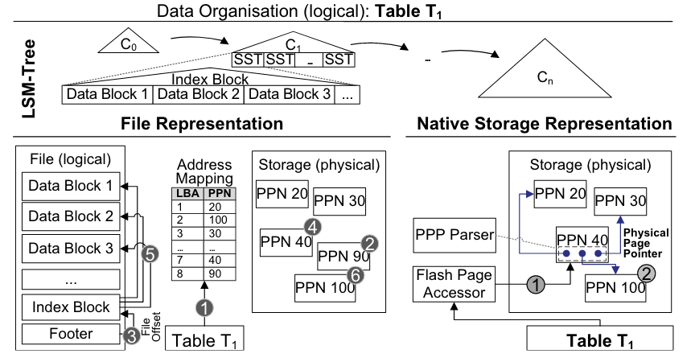
NDP需要在设备上访问和解释持久性二进制数据，而无需与主机进行任何交互。为此，设备上必须存在模式和数据字典信息，并且在NDP调用中传播这些信息。这些信息包括DBobjects（数据库对象）的信息，例如它们的列、类型、大小或物理表示。
在设备上，NDP基础设施使用模式信息来支持用于原位导航的数据布局访问器，以及用于数据解释的格式解析器还引入了物理页面指针来减少大地址映射的开销。
数据布局访问器存在于持久数据布局的每个元素中，帮助导航二进制数据组织并访问子元素。例如，对于给定的键（如图所示），访问器允许通过SST的索引块导航到数据块内记录的物理位置。访问器的实现相对简单，其微架构类似于加载单元。它们可以多次实例化以增加并行性。
格式解析器负责处理原位导航，而访问器则需要提取持久二进制元素（记录、值），对它们进行语义解释，并允许进一步处理、数学运算或比较。我们实际上区分了字段、记录和页面的格式和布局以实现此目的。
例如，在MyRocks中，LSM-Tree基于数据组织的每个元素（如图右侧所示）都对应于特定的解析器和访问器。索引块根据其格式进行解释，并提取指向数据块的物理页面指针。同样，数据块由相应的解析器和访问器处理以获取实际记录，这些记录本身包含元素，例如（a）标识符，包括column_family_id、所有主键字段、序列号和键/值类型；（b）根据DDL定义格式化的实际值。
生成过程中，解析器和访问器并不一定是静态的。由于格式和布局是声明性的，因此可以自动生成解析器和访问器作为软件和/或硬件对应项，以支持异构硬件和模式演化。
物理页面指针：在本地存储下，数据库管理系统对物理存储有直接控制，并管理逻辑到物理的地址映射。然而，NDP执行也需要原位的地址信息，用于设备上的地址解析和无干预执行。这种信息的传播会产生高同步开销。例如，对于1 TB的存储，页面级地址映射的大小可能达到1 GB。为此，我们引入了物理页面指针（PPP，见图），它补充了解析器和访问器，使得持久数据集内的任何引用都基于PPP。它们被设计用于追加式存储（例如，使用LSM-Tree1213或分区B-Tree），因为持久数据是不可变的，只能通过数据库管理系统控制的存储维护（即垃圾收集、压缩）进行修改。PPP消除了原位地址解析和地址映射同步的开销。后者仍然被维护，但只在数据库管理系统内部。例如，SST的索引块使用PPP解析器和访问器引用数据块（见图）。相比之下，传统的数据库管理系统主要使用文件和它们内部的偏移，这需要设备上的地址映射进行原位导航。要处理SST文件（见图），数据库管理系统提取文件的地址映射（1），加载（2）并处理（3）索引块（4）。对于每个索引块条目，数据库管理系统解析（5）数据块的地址并加载（6）
相关知识补充 –
- 在存储系统中，“PPN”通常是”Physical Page Number”的缩写。这是一种用于内存管理的技术，它将物理内存划分为固定大小的块，每个块被称为一个”page”。每个page都有一个唯一的”Physical Page Number”，用于标识和引用该page。
例如，在RISC-V中，物理内存地址是56bit，其中44bit是物理page号（PPN，Physical Page Number），剩下12bit是offset完全继承自虚拟内存地址（也就是地址转换时，只需要将虚拟内存中的27bit翻译成物理内存中的44bit的page号，剩下的12bitoffset直接拷贝过来即可）
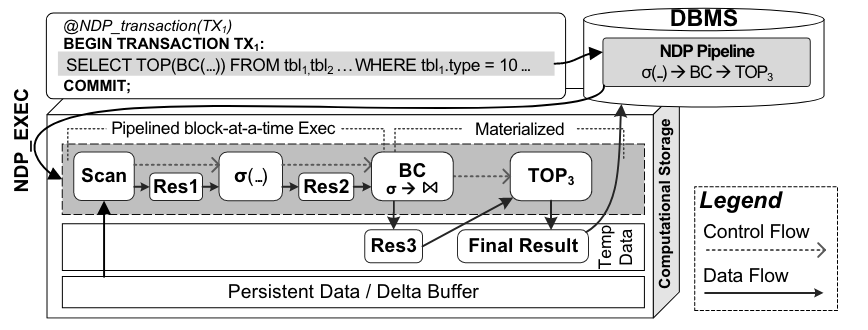
!!! – 仅允许非减小大小的操作，如连接或分组，原位物化它们的结果以减少数据传输
规划器和存储管理器采用一种分配策略，首先针对设备内存层次结构的快速级别，即静态FPGA内存，如BRAM或URAM，然后是快速的片上HBM，和片外DRAM。如果这些资源不足，就应用一种物化和溢出到持久存储（例如，NVM或Flash）的策略。每个物化阶段都被本地存储管理器分配一个独占的物理地址范围。这可能是哈希连接分区，或者具有大量组的聚合的情况。如果在执行过程中发现空间不足，管道会停滞，计算存储会在额外的往返中向DBMS请求更多的空间。
本地存储DBMS直接控制存储，管理逻辑到物理地址的映射，并执行垃圾收集。它为管道中的每个物化阶段分配并分配独占的物理地址范围。因此，DBMS确保其他事务、管道或NDP操作不会在同一存储空间中重叠。地址范围在执行期间保留，直到调用事务完成。作为其完成后的提交/回滚处理的一部分，DBMS将它们标记为GC，并安排一个异步GC调用。
EXPERIMENTAL EVALUATION
实验设置
-
基于MyRocks的，以nKV作为存储管理器，除非另有说明，否则将使用它。主机运行的是Debian 4.9操作系统，配备了一个3.4 GHz的Intel i5 CPU和4 GB的RAM。COSMOS+板通过PCIe Gen 2.0⇥8连接，并包括一个带有FPGA的Zynq 7045 SoC，两个667 MHz的ARM A9核心，以及一个配置为SLC的MLC Flash模块。在价格和资源方面，COSMOS+大致等同于消费级NVMe SSD或智能存储设备（例如，Samsung SmartSSD）。具体的配置取决于评估堆栈。MyRocks（MySQL 5.6）配置为Repeatable Read，因为不支持Serializable。除非另有说明，否则内存占用设置为数据集大小的7.5%（包括400 MB的块缓冲区），并且可变的memtables配置为32 MB。
-
neoDBMS，基于PostgreSQL12，并在ARM Neoverse N1系统开发平台（SDP）上作为主机运行，配备4个2.6 GHz的ARM N1-CPU和3 GB的RAM。一个带有2 GB DDR4的Xilinx Alveo U280 FPGA板，通过PCIe Gen4⇥8连接，作为企业级智能存储。
参数控制
- OLTP_SKEW – 设置热到冷数据访问的比率
- OLAP_SEL – 通过在NODE表的类型上过滤（正态分布）
- OLAP_PAUSE – 控制两次OLAP查询注入之间的时间。由于COSMOS+上ARM核心的数量有限（一个用于I/O，另一个用于NDP），OLAP工作负载目前只限于顺序执行
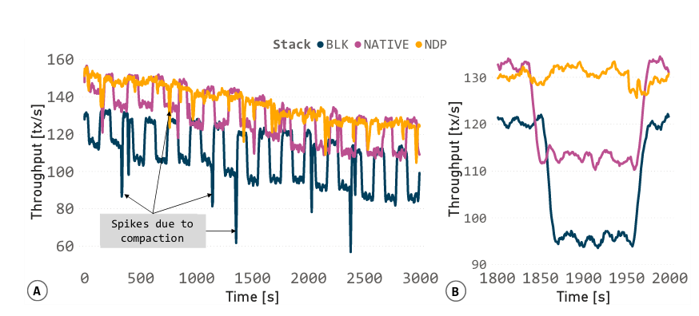
实验HTAP工作负载 – OLAP_PAUSE = 100s OLTP_SKEW =40%
A – 执行了带有HTAP扩展的LinkBench，它在Block、Native和NDP堆栈上运行。由于I/O增加和相关的缓冲区污染，OLAP查询期间的吞吐量下降
B – 放大了一个下降的细节
本地和块基线在注入OLAP查询时都表现出显著的性能下降。这是由于读I/O的数量增加，因为OLAP执行的冷数据必须从存储中获取。相比之下，由于原位OLAP执行，NDP堆栈中没有缓冲区丢失。OLAP处理会导致显著的缓冲区污染，因为热OLTP工作集页面被驱逐以腾出空间给冷数据。即使在OLAP处理完成并切换回OLTP工作负载后，缓冲区恢复并保留内存中的热OLTP工作数据集也需要时间
Spikes due to compaction – 压缩操作的主要目的是重新组织和优化数据，减少存储空间的使用，提高查询效率。然而，压缩操作本身需要读取、写入、排序大量数据，消耗较多的I/O和CPU资源。因此，在压缩操作进行时，可能会导致数据库的性能出现短暂的下降。
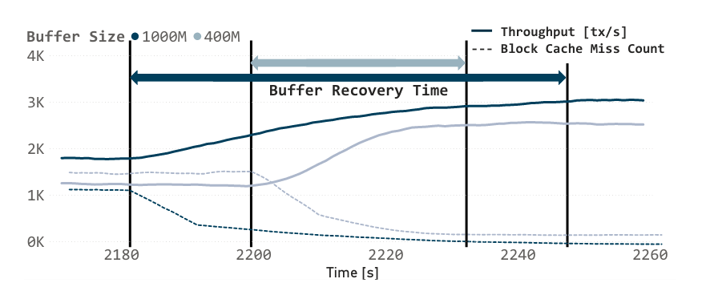
在OLAP查询之后，由于缓冲区保留了热数据集，缓存未命中（虚线）减少。OLTP吞吐量（实线）恢复到原始水平的缓冲区恢复时间（实箭头）取决于缓冲区的大小。
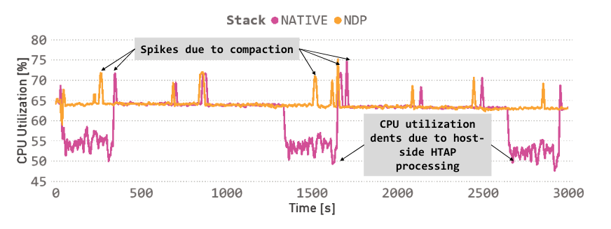
实验HTAP工作负载 – OLAP_PAUSE = 1000s
在主机上进行OLAP处理会因为I/O等待时间而降低CPU性能。通过利用设备上的功能，NDP可以健壮地利用主机资源。观察到在本地堆栈的OLAP阶段，CPU利用率显著下降。这是由于CPU停滞，等待I/O从存储中获取冷数据进行仅主机HTAP处理。使用NDP，这些下降被最小化，因为OLAP处理被卸载到计算存储，而原位执行是异步的和无干预的。因此，空闲的主机CPU资源被用于并发OLTP处理，因为工作OLTP数据集通常适合内存。此外，NDP利用了否则会闲置的存储设备资源。特别是，我们利用了COSMOS+的两个ARM核心，FPGA，并利用了全Flash并行。此外，无干预的NDP转化为强大的事务吞吐量
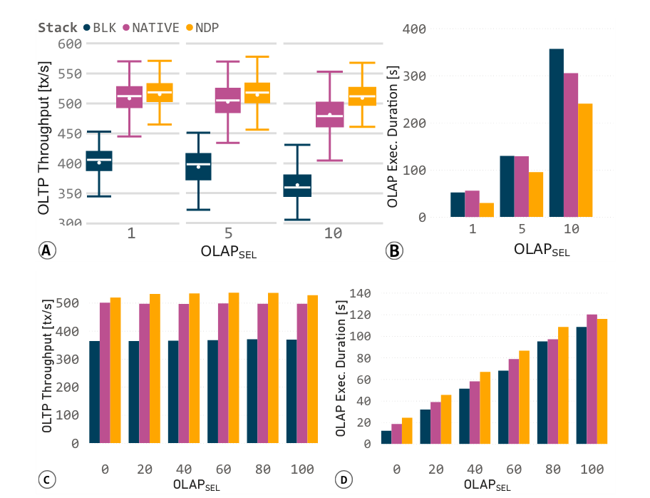
A – 执行BC作为OLAP工作负载可以避免OLTP吞吐量的下降
B – 随着选择性和OLAP运行时间的增加。
尽管在设备上的JOIN/GROUP BY查询较慢，但NDP在OLTP下优于native/block.
C,D本质上是更好的利用了CPU的并行性
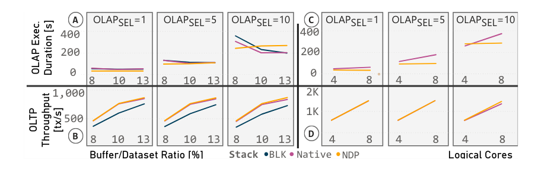
A B – 具有更大主机内存占用
C D – 具有更多逻辑核心。
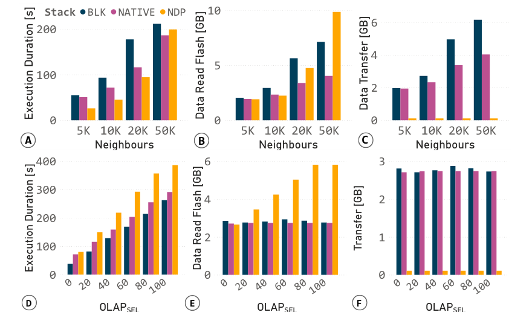
A – 处理BC，Native和NDP的性能优于Block。
B – 更多的邻居产生更多的NDP I/O。
C – 主机设备的数据传输显著减少。
在JOIN/GROUP BY/AGGR查询D，E，F中可以看到类似的效果
-
upware-NDP 减少数据传输：NDP 的一个主要优点是数据在其物理存储位置附近进行处理，从而减少了昂贵的数据传输。为了量化这种效果，我们在每个堆栈上独立执行只读的 OLAP 操作。
-
改变选择性：增加由 BC 处理的邻居数量，以及来自实验 3 的 OLAP 查询的 Join/Grouping 节点数量。
-
本地堆栈基线优于块：图 17.A 清楚地显示，本地堆栈基线在所有设置下都优于块。这是由于更精简的 I/O 堆栈，减少了需要读取和传输到主机的数据量，以及由于先进的本地 NVMe 存储管理器，减少了 I/O 延迟（图 B/C）。
-
NDP 改善 OLAP 运行时间：然而，对于较少数量的邻居（5K，10K），NDP 提高了 OLAP 运行时间，比本地提高了 52%，比块提高了 48%。随着邻居数量的增加，分析操作中最近邻搜索的数量也会增加，算法需要重新访问的节点数量也会增加。这种行为大大受益于大缓冲区，这是商品计算存储设备的主要限制，考虑到 COSMOS+ DRAM 容量的限制。
-
缓冲区未命中导致更多的 Flash 读取：因此，设备上的缓冲区未命中导致 NDP 相对于本地和块有更多的 Flash 读取（见图 B）。尽管有这些限制，图 C 清楚地表明，设备到主机的数据传输可以显著减少。
-
NDP 性能较低：图 D 显示了在相同条件下执行上一实验 的 OLAP 查询的执行时间。NDP 性能较低是由于 NDP BNL-JOIN 的计算受限，但也是由于其 I/O 强度（图 E），这是预期的，因为设备上的 join 缓冲区较小。然而，整个 NDP 管道都是减小尺寸的，保持主机传输的数量较低（图 F）。
-
NDP 进一步减少了到主机的数据传输，但受到设备上的处理能力（ARM）明显弱于主机 CPU 的限制。
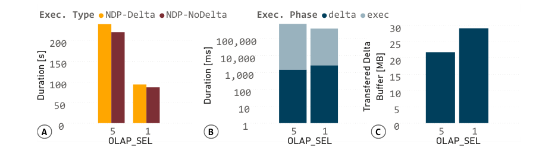
A – NDP在低开销的情况下操作新数据。
B – 传输时间由于C小的delta-buffer大小而较短。
-
up-NDP 可以操作新鲜数据：NDP 的一个主要优点是可以在支持事务保证的同时操作新鲜数据，但这是以将共享状态传输到计算存储为代价的。
-
量化开销：通过执行带有和不带有共享状态传输的 HTAP 实验来量化这种开销。我们改变 opsl_sel 来达到不同的共享状态大小。
-
OLAP 执行时间：图 A 显示了两种设置下的平均 OLAP 执行时间。这个执行时间被分解（图 B）为共享状态传输到设备的时间，以及后续的处理时间，这些都是以对数尺度表示的。
-
共享状态的大小：图 C 显示了这些分解的平均共享状态大小。共享状态传输的时间只有 1 秒，占总执行时间的一部分（0.7%）。
-
不同的共享状态大小：由于并行 OLTP 更新活动，共享状态的大小不同：较低的 OLAP_SEL 导致较低的 OLAP 运行时间和更多的 OLTP 事务，从而产生更多的更新和更大的共享状态。
-
控制传输开销：共享状态的大小，因此传输开销可以通过配置参数来控制。剩余的部分是由于依赖操作的新鲜数据处理。
-
BC 的执行时间：由于 BC 的执行时间取决于输入节点的数量和 OLAP_SEL，所以在两种情况（带有和不带有共享状态传播）之间的差距随着选择性的增加而增加。
尽管共享状态增加了从主机到设备的数据传输，但时间开销可以忽略不计：占分析查询的总 NDP 执行时间的 0.7%。
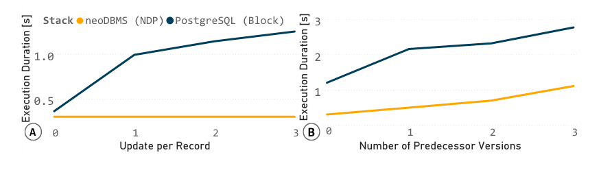
A – 在neoDBMS中，由于N2O的存在，检索最新的元组版本会产生开销。
B – 通过利用设备上的并行性，加快了对前驱版本的访问速度。
Comments